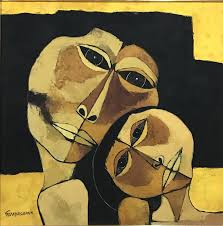
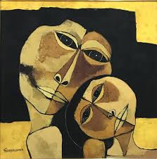

Oswaldo Guayasamín y su legado
Oswaldo Guayasamín, nació el 6 de julio de 1919 en Quito-Ecuador, fue un pintor, dibujante, escultor,
grafista y muralista ecuatoriano. Desde temprana edad, mostró un talento excepcional para el arte, lo
que lo llevó a estudiar en la Escuela de Bellas Artes de Quito y luego en la Escuela de Bellas Artes de
Madrid.
La influencia global de Guayasamín es innegable, ya que su arte conecta con audiencias que reconocen los
temas universales que explora. Además de su prolífica producción artística, Guayasamín fue un ferviente
defensor de los derechos humanos y la justicia social. Su compromiso con estas causas se reflejó en su
activismo político y en la fundación de la Fundación Guayasamín, una organización dedicada a promover la
paz y la solidaridad entre los pueblos.
Una de sus contribuciones más significativas al arte contemporáneo es la creación de la "Capilla del
Hombre" en Quito, Ecuador. Concebida por Guayasamín, alberga su extensa colección y es un símbolo de
esperanza y lucha contra la opresión y la desigualdad.

Obras de Oswaldo Guayasamín
La Edad de la Ira
La Madre
El Grito
 
